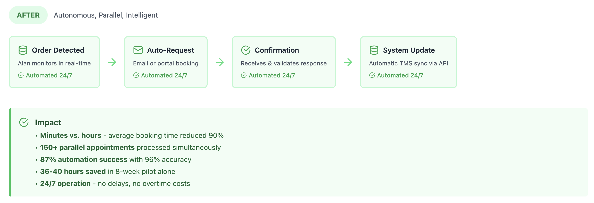

AI Agent Alan: Automating Logistics Scheduling
Transforming manual appointment coordination into intelligent, 24/7 autonomous operations: FourKites' first autonomous digital worker.
Director of UX, FourKites Intelligent Control Tower · 8-week pilot · 4 minute read
My Role: Director of UX, FourKites Intelligent Control Tower
Timeline: 8-week pilot program (2025)
Team: Cross-functional collaboration with Product, Engineering, Data Science, and Customer Success.
Executive summary
Led the UX strategy for AI Agent Alan, FourKites' first autonomous digital worker, solving a multi-billion dollar industry inefficiency in logistics appointment scheduling. Piloted with US Cold Storage (38 facilities nationwide), the solution achieved an 87% automation success rate while processing 600+ shipments across four major retailers, delivering immediate productivity gains and establishing a scalable framework for AI-driven operational transformation.
Alan overview

Alan is a digital worker developed by FourKites to automate the appointment scheduling process across logistics networks. He eliminates the manual inefficiencies of coordinating thousands of shipments, bridging the gap between automation, intelligence, and human-like adaptability.
Context & problem
Industry Challenge: Manual appointment scheduling consumes thousands of labor hours across logistics organizations. Each appointment requires repetitive, error-prone coordination over email, portals, and phone calls.
US Cold Storage (USCS), with 38 facilities nationwide, identified scheduling as its largest bottleneck, an area ripe for intelligent automation.
Design Challenge: How might we create an AI agent that behaves like an experienced logistics coordinator, context-aware, reliable, and human-trustworthy across multi-channel workflows?
Research & insight synthesis
Through interviews with schedulers, carrier reps, and logistics managers, the UX team uncovered critical pain points:
| Insight | UX Implication |
|---|---|
| 70% of schedulers' time spent on repetitive coordination | Automate high-frequency, low-value tasks |
| Lack of transparency across portals | Design unified visibility through centralized dashboards |
| Users distrust automation that "acts blindly" | Build transparent audit trails and natural confirmations |
| Missed appointments = financial penalties | Enable proactive exception handling with smart triggers |
Design goals
- Autonomy: Fully manage scheduling from request to confirmation
- Transparency: Provide visible logs and traceability for every interaction
- Adaptability: Handle diverse portal structures, emails, and rescheduling scenarios
- Trust: Build confidence through clear feedback loops and explainable actions
Solution: AI Agent Alan
Alan is a multi-channel AI scheduler that automates appointment booking, modification, and confirmation across:
- Email-based workflows
- Customer portals
- Phone-based scheduling systems
He integrates seamlessly with Transportation Management Systems (TMS) and the FourKites Intelligent Control Tower™, ensuring data consistency and real-time updates.
Process transformation
How AI Agent Alan eliminated manual scheduling inefficiency.


Core Experience Features
| Feature | User Value |
|---|---|
| Multi-Channel Scheduling Automation | Single unified workflow replaces fragmented tools |
| Proactive Exception Management | Automatic rescheduling when ETA changes |
| Seamless TMS Integration | Real-time updates across systems |
| Intelligent Prioritization | Optimizes delivery windows using business rules |
| Audit Trail UI | Every action visible and reversible, building user trust |
Pilot outcome — US Cold Storage
Metrics from 8-week pilot:
- 87% automation success rate
- 96% accuracy in securing delivery dates
- 600+ shipments processed
- 36–40 hours saved weekly per facility
Schedulers described Alan as "invisible but dependable, the best coworker we never hired."
Ethical & reflexive design
- Transparency by design: Every AI decision logged and explainable
- Human-in-the-loop controls: Override and audit capabilities maintained
- Privacy & Compliance: Adheres to enterprise-grade security and data governance
Key takeaways
- Intelligent UX in AI systems is not about replacing people, it's about elevating human focus from coordination to strategy.
- Contextual AI succeeds when it communicates visibly, not invisibly.
- Trust and usability are inseparable in enterprise automation.
Scalable future vision
Alan is now being extended to support:
- Cross-dock optimization
- Yard scheduling integration
- Scalable to 38 USCS facilities nationwide
- Voice-activated control for dispatchers
Next design iteration focuses on adaptive UX, Alan's ability to tailor responses by role, urgency, and facility behavior.
"Alan transformed scheduling from a chore into a conversation, and logistics from reactive coordination into proactive orchestration."
A few screens
1. FourKites detects a new purchase order, and Alan sees that an appointment is not set.

2. Alan requests a delivery appointment, and confirms with facility.


3. If Alan has to schedule an appointment using the customer appointment portal.
Alan accesses the portal

Alan initiates the scheduling process


Appointment Status Logs

Facility: Scheduling Configurations